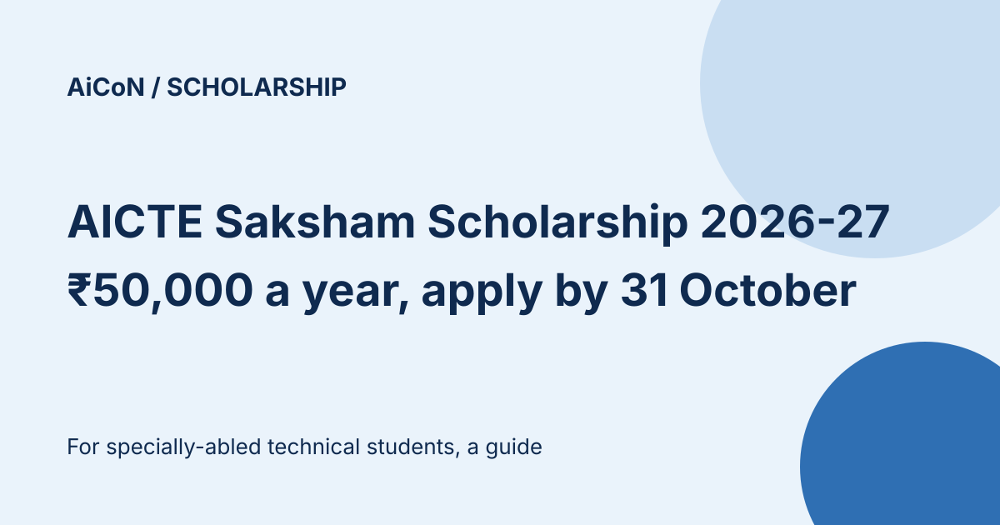

AICTE Saksham Scholarship 2026-27: ₹50,000 a year for specially-abled students, apply by 31 October
AICTE's Saksham scholarship gives ₹50,000 a year to specially-abled students in technical degree and diploma courses. Applications for 2026-27 are open on the National Scholarship Portal (NSP) until 31 October 2026. The guideline says every eligible student gets it, with no cap on awards.

What does it give?
₹50,000 per year of study, as a lump sum towards college fee, computer, stationery, books, equipment and software. For degree courses it runs up to 4 years for first-year admissions and 3 years for lateral entry. The FAQ gives diploma support for up to 3 years from first-year admission, or 2 years after lateral entry. No extra hostel or medical grant is listed. The scholarship is paid by Direct Benefit Transfer to a savings account in the student's own name, and renewal is through NSP each year.
Who can apply?
| Course | First year of a degree or diploma course, or second year through lateral entry, in an AICTE-approved institute. |
|---|---|
| Disability | Not less than 40%. |
| Income | Family income from all sources not more than ₹8 lakh a year, with an income certificate from the State or UT. |
| Gap | Not more than two years between passing the qualifying exam and admission (degree guideline). |
| Not eligible | Anyone getting another scholarship, stipend or salary during the course. It would be stopped and the amount refunded. |
The degree guideline says income must not be more than ₹8 lakh, while the FAQ says less than ₹8 lakh. If your income is exactly ₹8 lakh, ask your institute which current NSP rule applies before relying on eligibility.
NSP now permits applications for one merit-based and one or more welfare-based schemes, but only as each scheme allows. This general notice does not remove Saksham's restriction on other financial assistance. The degree guideline says other scholarships, salary, stipend or emoluments can end the award and require refund of the entire amount to AICTE.
Key dates on NSP
| Scheme open | 1 June 2026 |
|---|---|
| Student application | Until 31 October 2026 |
| Institute verification and defective applications | Until 15 November 2026 |
| District, state or ministry verification | Until 30 November 2026 |
As on the NSP list, degree and diploma versions of the scheme have the same dates. Disabled students must first give consent to share their UDID details on the UDID portal, as an NSP announcement says, or they cannot submit.
How are awardees picked?
The guideline says all eligible, verified applicants get the scholarship, so there is no merit rank or draw. Incomplete applications are rejected, and only applications verified by the institute and the state technical education department count.
A careful checklist
- Get your disability certificate from a competent authority, UDID and current-year income certificate ready. Keep 10th/12th marksheets, relevant ITI/diploma lateral-entry records, study/bonafide certificate and category certificate if applicable. Use the current NSP checklist; the linked FAQ forms still show 2021-22.
- Give UDID consent on the UDID portal, then generate your One-Time Registration (OTR) on scholarships.gov.in. The FAQ requires Aadhaar and an Aadhaar-seeded account in your own name.
- Apply under AICTE Saksham, degree or diploma, before 31 October 2026.
- Ask your institute to verify before 15 November 2026.
We did not log in or apply. We read the NSP scheme list and announcements, the AICTE Saksham degree guideline PDF (July 2020) and the scheme FAQ. These older guideline and FAQ documents explain the terms, not a promise that every 2026-27 rule is unchanged.
Frequently asked questions
Is the money paid to the college?
No. It goes to the student's own savings account by DBT. Joint, minor or FRILL accounts are not accepted, per the FAQ.
What happens at renewal?
Submit renewal through NSP with the required promotion/passing record certified by your institute. Failing to progress or dropping out stops further support, per the guideline and FAQ.
Can a postgraduate or dual-degree student apply?
The FAQ lists postgraduate and dual-degree courses as rejection reasons. It also requires both the course and institute to have AICTE approval for the current academic year.
Sources: NSP scheme list, Saksham degree guideline PDF, Saksham FAQ. Checked 10 October 2026. This is an AiCoN explainer, not a government publication.